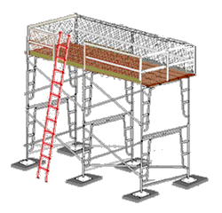
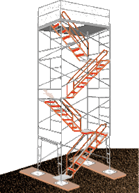

|
|
Workers are most vulnerable to fall hazards when climbing on or
off a scaffold. Therefore, employers are required to provide safe scaffold access. Erectors and dismantlers face
additional access problems due to the incomplete condition
of the scaffolding. Requirements to prevent falls that apply only to
these workers are addressed separately below.
|
General
|
|
-
Employees must be able to safely
access any level of a scaffold that is 2 feet above or below an access
point. [1926.451(e)(1)]
-
OSHA standards specifically forbid
climbing cross-braces as a means of access.
[1926.451(e)(1)]
|
| Ladders
|
| 
|
|
Figure 1. Example of a frame
scaffold with hook-on ladder. |
-
Portable, hook-on, and attachable ladders must be positioned
so as not to tip the scaffold. [1926.451(e)(2)(i)]
-
Hook-on and attachable ladders must be specifically designed
for use with the type of scaffold on which they are used. [1926.451(e)(2)(iv)]
-
Hook-on and attachable
ladder rungs shall:
-
Be positioned so that
their bottom rung is not more than 24 inches above
the scaffold supporting level.
[1926.451(e)(2)(ii)]
-
Have uniform spacing
between rungs of a maximum 16¾ inches. [1926.451(e)(2)(vi)]
-
Have minimum rung length of 11½ inches.
[1926.451(e)(2)(v)]
-
Have rest platforms provided at
a maximum of 35-foot vertical intervals. [1926.451(e)(2)(iii)]
-
Stairway-type ladders shall:
-
be positioned so that their bottom step is not more than 24 inches above the
scaffold supporting level [1926.451(e)(3)(i)]
-
have rest platforms at maximum vertical intervals of 12 feet [1926.451(e)(3)(ii)]
-
have a minimum step width of 16 inches, except for mobile scaffold stairway-type
ladders, which shall have a minimum step width of 11½ inches
[1926.451(e)(3)(iii)],
and
-
have slip-resistant treads on all steps and landings. [1926.451(e)(3)(iv)]
-
Steps and rungs of ladders and stairway-type ladders shall line up vertically with each
other between rest platforms. [ 1926.451(e)(7)]
|
|
Integral
(Built-in) Access |
-
Integral (built-in) scaffold access frames must:
-
Be specifically designed and constructed for use as ladder
rungs. [1926.451(e)(6)(i)]
-
Not be used as work platforms when rungs are less than 11½
inches in length, unless each affected employee uses appropriate fall
protection. [1926.451(e)(6)(iii)]
-
Have rungs which are uniformly spaced and a length of at least 8 inches,
with a maximum
space between rungs of 16¾ inches. [1926.451(e)(6)(ii),(iii),
(iv)
and 1926.451(e)(2)(vi)]
-
Have rest platforms provided at a maximum of 35 foot vertical intervals. [1926.451(e)(6)(v)]
|

|
| Figure 2. Stair tower with
stairrail, including toprail and midrail. |
-
Stairtowers (scaffold stairway/towers) must
have:
- A stairrail consisting of a toprail and a midrail on each side of the
stairway.
[1926.451(e)(4)(i)]
- A toprail of each stairrail system capable of serving as a handrail, unless a
separate handrail is provided. [1926.451(e)(4)(ii)]
- Sufficient handhold on handrails, and toprails serving as handrails, for employees
grasping them to avoid falling. [1926.451(e)(4)(iii)]
- Stairrails and handrails surfaced to prevent punctures or lacerations to employees,
and to prevent snagging of clothing. [1926.451(e)(4)(iv)]
- Ends of stairrails and handrails constructed so that they do not constitute a
projection hazard. [1926.451(e)(4)(v)]
- A space of at least 3 inches between handrails, or stairrails used as handrails,
and other objects. [1926.451(e)(4)(vi)]
- A distance of no less than 28 inches and no more than 37 inches from the upper
surface of the stairrail to the forward edge of the tread, in line with the face of
the riser. [1926.451(e)(4)(vii)]
- A landing platform at least 18 inches wide by 18 inches long at each
level. [1926.451(e)(4)(viii)]
- A scaffold stairway width of at least 18 inches between
stairrails. [1926.451(e)(4)(ix)]
- Slip-resistant surfaces on treads and landings. [1926.451(e)(4)(x)]
- Stairways installed between 40 degrees and 60 degrees from the horizontal. [1926.451(e)(4)(xi)]
- Guardrails meeting OSHA requirements [see 1926.451(g)(4)] on the open sides and ends
of each landing. [1926.451(e)(4)(xii)]
- Uniform riser height, within ¼-inch, for each flight of stairs. Greater variations
in riser height are allowed for the top and bottom steps of the entire system (not
for each flight of stairs). [1926.451(e)(4)(xiii)]
- Uniform tread depth, within ¼-inch, for each flight of stairs.
[1926.451(e)(4)(xiv)]
|
|
Ramps and
Walkways |
|
- Ramps and walkways 6 feet or more above lower levels must have guardrails that comply with
1926 Subpart M - Fall Protection. [1926.451(e)(5)(i)]
- No ramp or walkway shall incline more than 1:3 (1 vertical to 3 horizontal, or 20 degrees
above the horizontal). [1926.451(e)(5)(ii)]
- If a ramp or walkway has a slope of more than 1:8, it must have cleats securely fastened to
the planks not more than 14 inches apart, to provide footing. [1926.451(e)(5)(iii)]
|
|
Direct Access |

|
|
Figure 3. Example of direct
access. |
-
Direct access to or from another surface is permitted
only
when the scaffold is not more than 14 inches horizontally and not more than 24 inches vertically from the other
surface. [1926.451(e)(8)]
|
|
Erectors
or Dismantlers |
|
|
| Figure 4. Install ladder as soon as
possible during scaffold erection. |
-
Employers are required to provide safe access for
employees erecting or dismantling supported scaffolds where it is feasible, and
where it does not create a greater hazard. [1926.451(e)(9)(i)]
-
Hook-on or attachable ladders shall be installed as
soon as scaffold erection has progressed to the point that permits safe installation
and use (Figure 4). [1926.451(e)(9)(ii)]
-
When erecting and dismantling tubular, welded-frame scaffolds,
end frames may be
used as climbing devices for access, provided that: [1926.451(e)(9)(iii)]
-
Horizontal members are parallel, level, and
not more than 22 vertical inches apart.
- They are erected in a manner that creates a usable ladder and provides good
hand hold and foot space.
-
Cross-braces on tubular welded frame scaffolds
are not allowed to be
used as a means of access or egress. [1926.451(e)(9)(iv)]
|
|
Competent Persons
|
-
The competent person is responsible for determining
the safety and feasibility of installing and using safe means of access, based on
site conditions and the type of scaffold involved. [1926.451(e)(9)(i)]
|
| Home | Supported Scaffolds | Suspended
Scaffolds | Other Scaffolds |
| Frequently Asked
Questions | Overview
| Standards | Glossary | User
Guide | Credits |
|